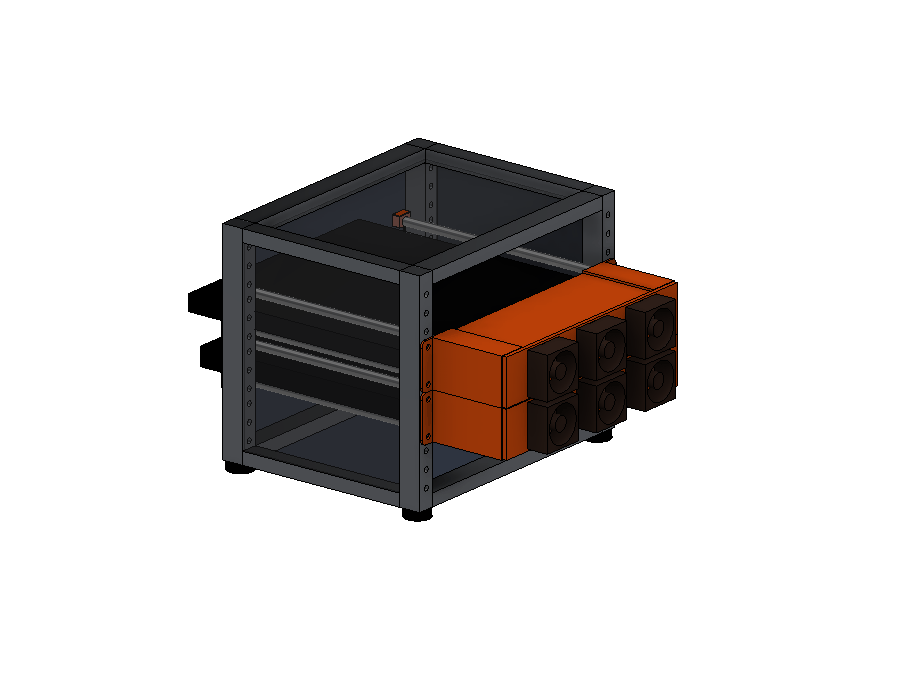
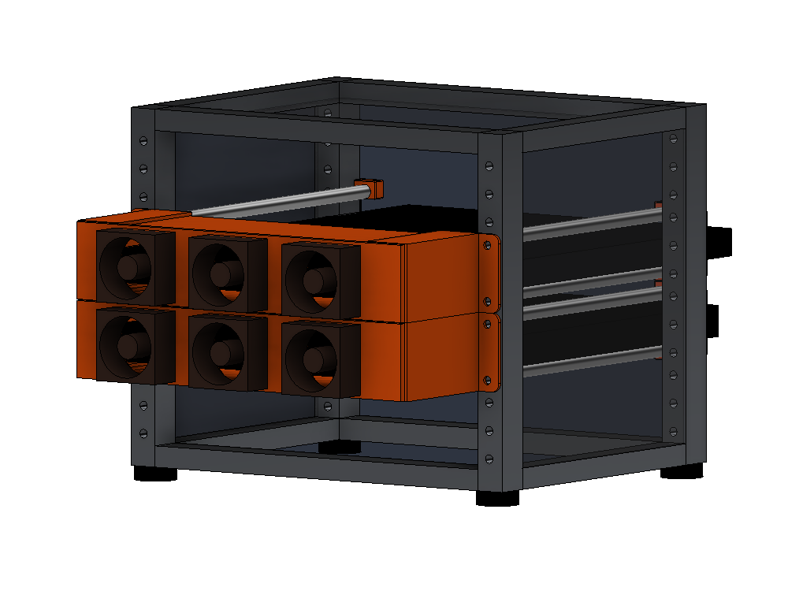
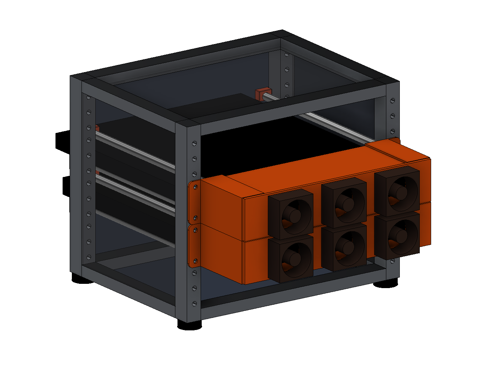

Two laptops, one desk. So they slide into the rack.
3D printed trays that rack-mount a MacBook Pro and a Surface Laptop in a 10 inch mini rack, with ducted fans out the back. Free files, MIT licensed.
Drag to spin, scroll to zoom. The orange parts are the printed ones and the brown ones are the fans.

Why this exists
I use my laptops clamshell. Lid closed, hooked to an ultrawide with a real keyboard and mouse. The problem is two of them on one desk. My desk is six feet by two and a half, and that still is not enough room, because I want space for other projects too.
Then I came across the 10 inch mini rack standard. Desk sized racks, mostly for home lab gear. Mine is a GeeekPi 4U cabinet, about 80 dollars on Amazon. I thought, what if the laptops just slid in.
How it works
A front ear and a rear ear, which is what I call the brackets, plus 8mm smooth rod I had left over from an old 3D printer. The rods bridge front to back and the laptop slides in like a drawer and rests on them. One rack unit per laptop. A MacBook Pro 14 and a Surface Laptop 13.8 both fit the same parts.


The laptops ran warm in the confined space and their fans kept spinning up. Not healthy. The fix is a plate that mounts to the back of the rear ears and holds three Noctua NF-A4x20 5V fans. 40mm is the biggest fan that stands upright inside a single rack unit, and three of them together draw 0.3 amps, so a tray runs off any USB port. The fans ship with screws and a solderless splice kit, you supply one old USB cable per tray. No power supply, no soldering. The one warning is to skip generic USB fan adapters, most of them quietly boost to 12V and a 5V fan will not survive that.
The plate is more than a fan holder. Printed duct panels close off the top and bottom behind the laptop, walls on the ears close the sides, and the rack itself has solid acrylic panels. The only way in is the front of the rack, so the fans have to pull their air across the top and bottom of the laptop to get it. That is the whole trick.

The duct used to be part of the plate. One piece, four hours to print, most of it wall, and every change to the fan layout meant printing the wall again. Now it is three pieces. A flat plate, and two sheets that slide into duct rails on the ears. The rails reach into the dead space above and below the laptop, which was doing nothing anyway.
Getting the sheets to actually seal took longer than drawing them. They only grip 10mm at each end, so 170mm of the back edge had nothing holding it against the plate, and a butt joint over that distance does not seal. So the plate got a groove for the edge to sit in. Then they were 2mm sheets in a 2.4mm slot, which is 0.4mm of room to rattle in next to the fans, so they became 2.2mm. None of that shows up in a photo. All of it was the difference between a duct and two loose panels.
It started as four fans. Then I worked out the duct's own free area, about 3880mm2 with a MacBook in it, and three openings come to 3584. That is the crossover. Below it the openings choke the duct, above it you are adding noise and not air. Four was past it. So three, evenly spaced so each one draws its own third.
The plate has three openings either way, so the repo includes a printed plug for an empty one. Start with two fans and a plug, and if the thermometer disagrees, pull the plug and add the third. No reprint. The zip tie slots sit either side of every opening, so one tie through them straps the plug in, and there is a channel across the plug face for it to sit in.

About the colors. The printed parts render in Prusa orange because that is what is loaded in my printer. Print yours in anything. The fans are that famous Noctua brown, the color nobody asks for and everybody recognizes. Those you are stuck with.
I have not thermal tested it yet. The plate exists, the fans are specified, and I do not know yet if it solves the heat. That will be its own evening with a thermometer and probably its own disappointment.
Get the files
Everything is in the repo, MIT licensed.
- STLs for every part, verified watertight
- 3MF plates for PrusaSlicer, arranged and mirrored. Ears on one, the duct on two more
- STEP and Fusion 360 files if you want to change things
- A bill of materials. About 165g of PETG per tray, plus three fans, four rods, and a handful of M3 hardware
- Three rear ear options. Heat-set inserts, plain hex nuts, or screws straight into the plastic
The easier way
A friend saw this and sent me photos of his desk. A vertical stand, both laptops standing on edge, twenty dollars and about a minute of work. No printer, no CAD, no fans, no evenings.
It works. It holds two laptops and it takes up less desk than my rack does. I have no rebuttal.
What I will say is that his laptops are cooled by the room and optimism, which is exactly what mine were doing before I started. And nothing on his desk slides out like a drawer.
He had a suggestion too. Print a version that screws down to the desk so it does not tip. His is weighted, which is the same problem with a heavier answer. So the twenty dollar solution needs ballast and mine needs three fans and neither of us is winning. He finished with the note that I could still 3D print it, which is the friendliest way anyone has told me I overdid it.
How it got built
I modeled the first pass myself in Fusion 360. The trays worked, then the heat problem sat untouched for months. Not a skill problem, I was stuck, which is a different thing.
The cooling came out of handing Claude my Fusion files and photos of the rack through the Fusion MCP. It designed the fan plate and the duct, I caught its mistakes and it caught mine. The repo lists two contributors, me and Claude. The idea was still mine. So was the drawing, the corrections, and the mistake I had to catch myself.